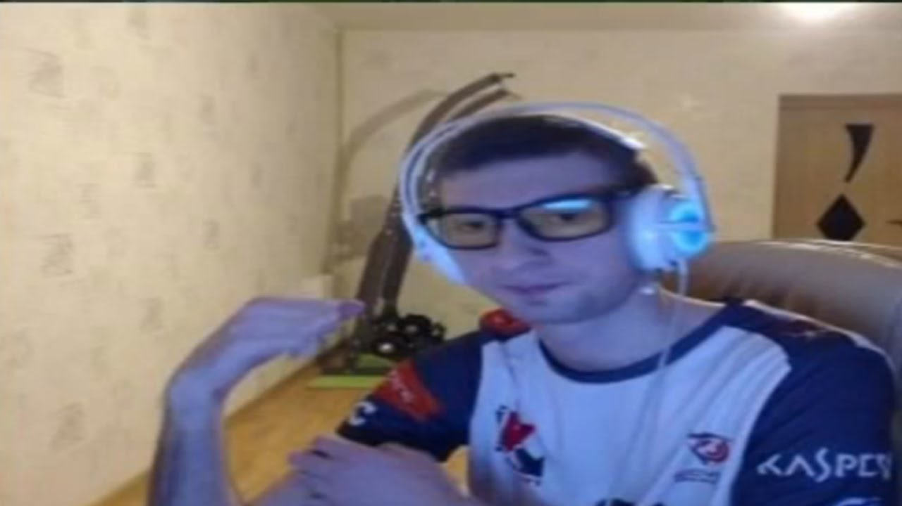

| Резюме | |
|  |
Фамилия: Подковыров
|
| 1.Образование | |
Калининградский государственный |
Направление: вычислительная техника |
| 2.Достижения | |
| Участвовал в интеллектуальной игре «ЧГК» |
|
| 3.Опыт работы | |
| «31 Государственный проектный институт специальногостроительства» |
С 2019 по нынешнее время |
| 4.Навыки, умения, личные качества | |
| 5.Желаемое место работы | |
| ул. Большая Лубянка, 20, стр.2, Москва |
ФСБ |